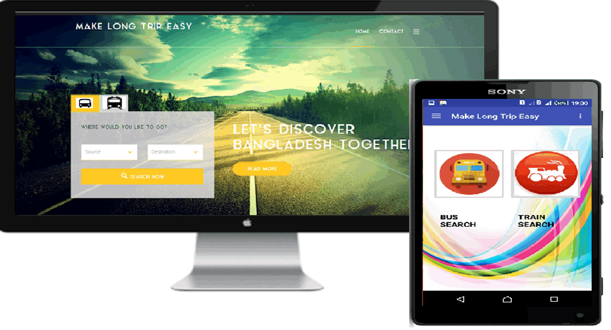
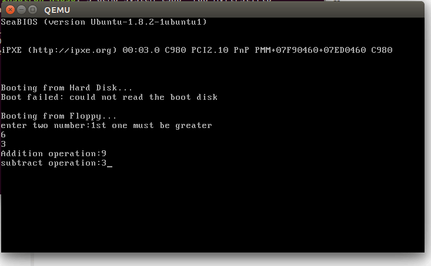
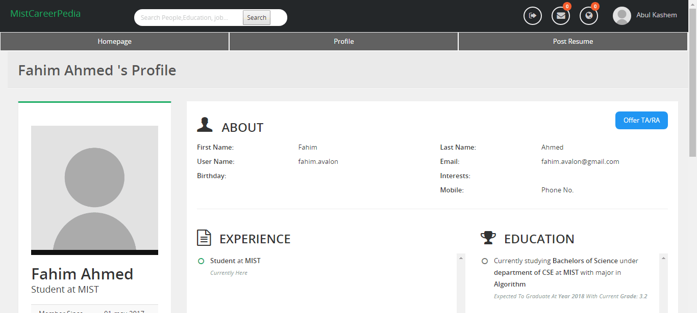
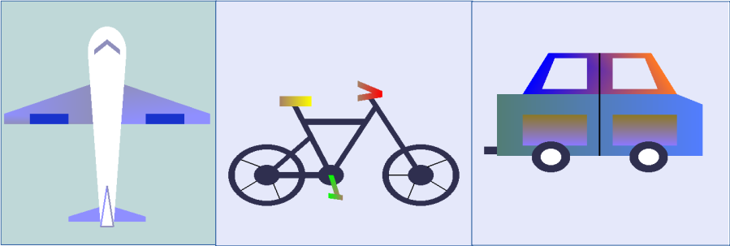
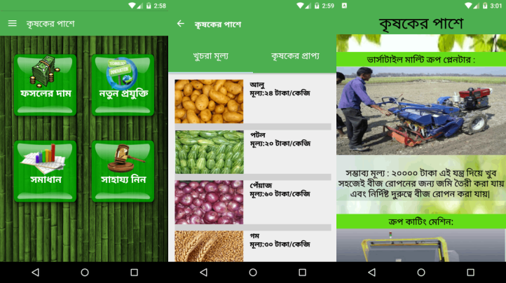

Projects
Follow my Github profile here.
MAKE LONG TRIP EASY (2017)
| It is an application to know easily about the schedules and routes of bus and trains for long distance travel. One can also book ticket sitting at home through this app. It has android version as well as web version. [Project Link] |

SMART RICKSHAW - AN AUTOMATED FARE SYSTEM (2018)
| A device named Smart Rickshaw - An Automated Fare System to measure automatically the fare of a well-known vehicle of Bangladesh called Rickshaw. The device was made using Arduino, Accelerometer Gyroscope, IR Obstacle Sensor and Humidity Sensor. [Project Link] |
OPERATING SYSTEM (2017)
| This project is about building a bare metal 16-bit OS having the feature to perform addition and subtraction operations with two single digit numbers. The OS is built for real mode using NASM. [Project Link] |

MIST CAREERPEDIA (2017)
| The Project was done as my Internet Programming course’s lab project. This is a web application which lets recruiters, professors, students, job applicants connect online and socialize the way
Linkedin does. Besides this web application has social networking site features in it. It is a web application. Front-end is developed using html,css, javascript, ajax, jquery and oracle (11g) database and php is used in back-end. It includes:
· Class Diagram, Data Flow Diagram, Use Case Diagram · Software Requirement Specifications (SRS) [Project Link] |

VEHICLE LEARNING TOOL (2018)
| This 2D graphics project was built using OpenGL where different vehicles were shown with the name and movement with different background transation sound and the name.
Need to press:
A for Aeroplane B for Bicycle C for Car Right Arrow for transition [Project Link] |

KRISHOKER PASHE (Beside the Farmers) (2018)
| It is an android application to help the poor farmers of Bangladesh. The app will show the farmer the current selling price and the transportation cost of the crops he wants to sell.It will help the farmers to demand for the proper price of his crops. If the wholesaler disagrees to give the demanded proper price, he can send a complain to the app.The app will send the complain against the wholesaler to the "Krishi Shomprosharon Odhidoptor" so that they can take proper actions. They can notify us whether their problem has been solved or not. If their problem is not solved yet, the app will again send a complain. The illiterate farmers can know about the use of new technology and raise question regarding farming issue. Our agriculture expert will answer their question. If the issue is resolved, question raiser can rate the answer. [Project Link] |

INTERIOR OF A RESTAURANT ANIMATION (2018)
| This 3D graphics project was aimed to make a one minute animation of a restaurant with changing of camera directions. It was built using 3ds Max. |